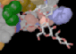
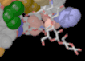

label3d [-png [outfile.png]] < infile.r3d [ > outfile.png ] label3d -tiff [outfile.tiff < infile.r3d [ > outfile.tiff ]
The syntax of the label3d command in version 2.6d has been changed to match that of the render command. Input is from stdin, output is to stdout unless given explicitly as a parameter to the -tiff or -png switches.
Unfortunately, the Raster3D render program cannot process labels. To overcome this lack, earlier Raster3D distributions included an auxilliary program r3dtops that complements render in that it can process the labels but not the graphics objects. The r3dtops code is now part of the render program itself, and is invoked if the -labels command line switch is present. In this case the labels are converted to PostScript commands and placed in a file label3d.ps. The label3d script automates the process of rendering the image, running the resulting PostScript file through ghostscript, and then recombining the two component images into a single TIFF or PNG image containing both the molecular graphics objects and the associated labels.
The label3d script requires the ImageMagick image processing package, and ghostscript.
 Back to top
 Raster3D homepage
Back to top
 Raster3D homepage